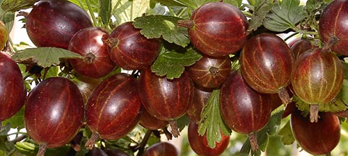

Hinonmacki Rot
Bohatě plodící odrůda s kulatými, sladkými červenými plody a dobrou odolností vůči padlí.
Detail odrůdy ↗Pět charakterově odlišných keřových odrůd: od raných červených plodů po pozdní zlatavý angrešt s medovou chutí.

Stručné charakteristiky vycházejí z oficiálních produktových karet Šlechtitelské stanice Velké Losiny.
Bohatě plodící odrůda s kulatými, sladkými červenými plody a dobrou odolností vůči padlí.
Detail odrůdy ↗Zelenožluté plody mají sladkokyselou chuť a jemnou slupku. Odrůda dobře odolává padlí; vyplatí se sklízet ji včas.
Detail odrůdy ↗Tmavě červené až fialové plody zajímavé chuti, téměř beztrnné výhony a rezistence vůči padlí.
Detail odrůdy ↗Výrazně tmavé plody s neobvyklou chutí. Odrůda má podle stanice dobrou odolnost vůči padlí.
Detail odrůdy ↗Výnosná odrůda se šťavnatými plody medové chuti, které se v plné zralosti zbarvují do zlatova. Dobře odolává padlí.
Detail odrůdy ↗Přehled pomáhá s výběrem, nenahrazuje aktuální skladovou nabídku stanice.
Otevřít nabídku angreštu ↗